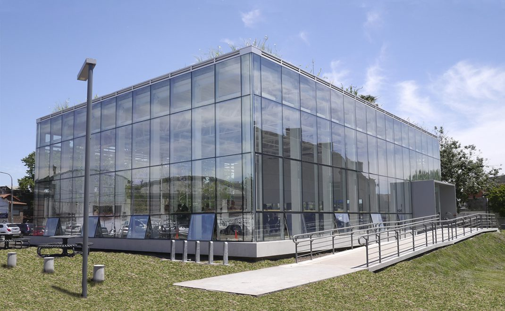

Nuestro Instituto
En el año 1995, un grupo apasionado de bailarines y amantes de la cultura se unieron con un sueño compartido: preservar y promover las danzas nacionales e internacionales. Este fue el inicio del Instituto Nacional de Danzas, un proyecto que no solo buscaba enseñar, sino también tejer una red de conexiones entre academias, profesores y alumnos a través de la expresión artística. La visión de este organismo, inspirada en el deseo de mantener viva la esencia de las danzas en todas su formas, llevó a la creación de un espacio que trasciende las barreras del tiempo. Desde el principio, el Instituto se convirtió en un faro cultural, iluminando la pasión por la danza y la rica herencia de Argentina. Con el correr de los años, el Instituto Nacional de Danzas se transformó en un crisol de talento y creatividad. Maestros respetados compartieron sus conocimientos, cada paso contaba una historia, y cada clase resonaba con el eco de antiguas tradiciones. Los estudiantes, desde los más jóvenes hasta los más experimentados, encontraron en el Instituto un santuario donde la danza no solo era aprendizaje técnico, sino un puente hacia el pasado. Las presentaciones de las academias registradas en el instituto, ya sea en pequeñas funciones comunitarias o en grandes escenarios, se convirtieron en eventos que trascendían el mero entretenimiento. Cada espectáculo era una celebración de la identidad y el testimonio vivo de la diversidad cultural que define a la nación. A medida que el Instituto Nacional de Danzas creció, también lo hizo su impacto en la comunidad. Programas educativos se expandieron, alcanzando a personas de todas las edades y trasfondos. Las generaciones más jóvenes fueron instruidas en la importancia de sus raíces culturales, mientras que los mayores redescubrían y compartían sus propias historias a través de la danza. El Instituto se convirtió en un hogar lejos de casa para muchos, donde se forjaron amistades, se transmitieron enseñanzas y se celebró la belleza de la diversidad. La visión de los fundadores no solo se había cumplido, sino que había florecido en algo más grande de lo que nunca habían imaginado. En el presente, el Instituto Nacional de Danzas continúa siendo un faro cultural, iluminando el camino para futuras generaciones. Cada año que pasa, la llama de la pasión por las danzas sigue manteniendo viva la tradición y dejando una huella indeleble en el tejido cultural de Argentina. La historia del Instituto es una danza perpetua, una coreografía que celebra la conexión eterna entre el pasado, el presente y el futuro.